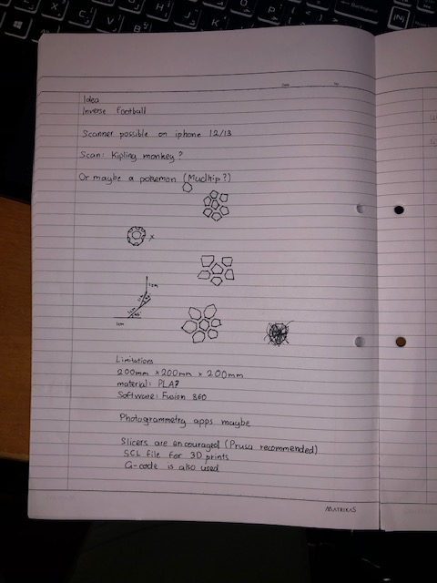
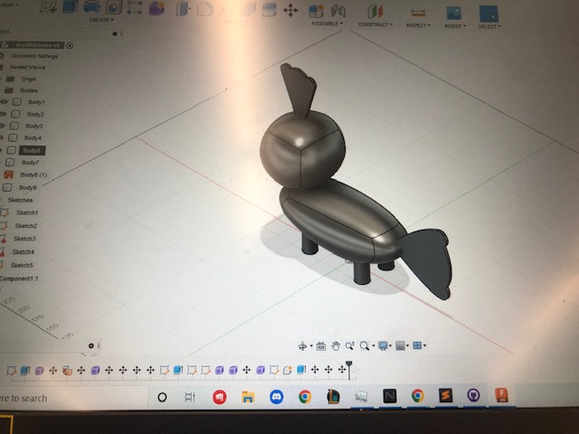
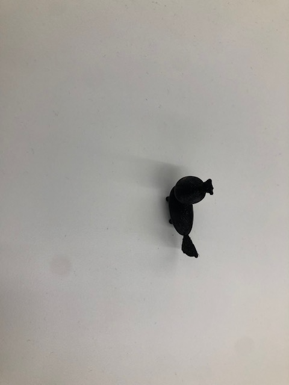

Our assignment this time was to create a 3D model and to print it using a 3D printer. The specifications were that we had to make a figure that was less than 200mm x 200mm x 200mm
My first idea was to make an inverse football with the pentagons/hexagons empty and it would be held together by the outlines. Unfortunately, I could not work on this due to issues with breaking fo the supports
I was inspired by a few of the projects that the professor had showed us during the class and then I started to work on a pokemon
I thought long and hard about which pokemon I could do and I eventually came to the cocnclusion that I would do the axolotl-like pokemon named 'mudkip'
Although this would not be an easy task I decided to take it up, Mudkip is made out of 2 main 3D ellipse shapes and a few cylinders for legs
I decided to use the quadball shape and I think it turned out quite nicely
 To download